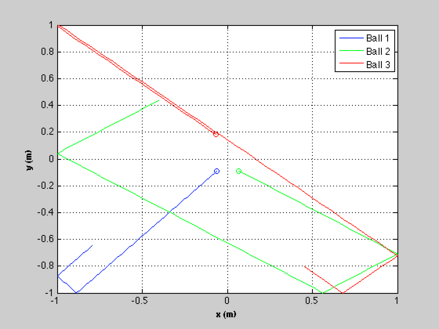
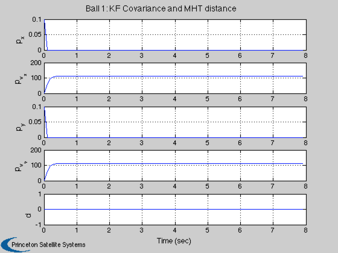
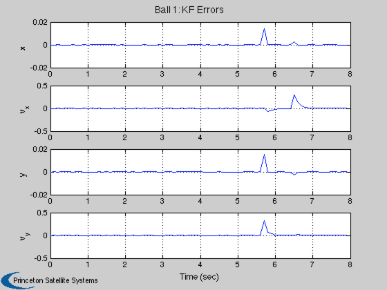
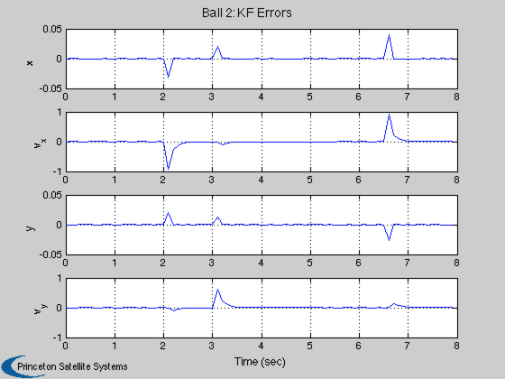
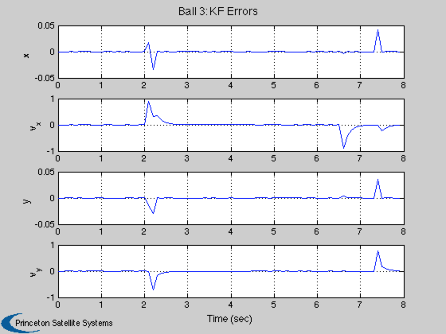

Billiard demo using a Kalman filter to estimate the ball states.
This models billiard balls that can bounce off the walls of an enclosure. The model is two double integrators but because of the bounce there is considerable model uncertainty in position and velocity. The sensor outputs the x and y position of each ball with noise.
The state vector is [x;vX;y;vY].
The demo uses the Kalman Filter (KF).
The simulation is run first and then the KF estimates the trajectory of the balls. The demo also computes the MHT distance for the balls. You can select the number of balls.
------------------------------------------------------------------------- See also BilliardCollision, RHSBilliards -------------------------------------------------------------------------
Contents
-------------------------------------------------------------------------
% Copyright (c) 2013 Princeton Satellite Systems, Inc. % All rights reserved. % -------------------------------------------------------------------------
Initialize
-----------
% Set the seed for the random number generators. % If the seed is not set each run will be different. %--------------------------------------------------- seed = 45198; rng(seed); % The number of balls and the random initial position and velocity % ---------------------------------------------------------------- d.nBalls = 3; sigP = 0.4; sigV = 1; sigMeas = 0.00000001; % Enclosure limits % ---------------- d.xLim = [-1 1]; d.yLim = [-1 1]; % Time step setup % --------------- dT = 0.1; tEnd = 8; % Set the initial state % --------------------- x = zeros(4*d.nBalls,1); rN = rand(4*d.nBalls,1); for k = 1:d.nBalls j = 4*k-3; x(j ,1) = sigP*(rN(j ) - 0.5); x(j+1,1) = sigV*(rN(j+1) - 0.5); x(j+2,1) = sigP*(rN(j+2) - 0.5); x(j+3,1) = sigV*(rN(j+3) - 0.5); end % For initializing the Kalman Filter % ---------------------------------- x0 = x; % Set the number of time steps % ---------------------------- n = ceil(tEnd/dT); % Plotting % -------- xP = zeros(length(x),n);
Simulate
---------
fprintf(1,'\nRunning the simulation...'); % Sensor measurements % ------------------- nM = 2*d.nBalls; y = zeros(nM,n); iY = zeros(nM,1); for k = 1:d.nBalls j = 2*k-1; iY(j ) = 4*k-3; iY(j+1) = 4*k-1; end for k = 1:n % Collisions %----------- x = BilliardCollision( x, d ); % Plotting %--------- xP(:,k) = x; % Integrate %---------- x = RK4(@RHSBilliards, x, dT, 0, d ); % Measurements %------------- y(:,k) = x(iY) + sigMeas*randn(nM,1); end fprintf(1,'DONE.\n'); % Plot the simulation results % --------------------------- NewFig( 'Billiard Balls' ) c = 'bgrcmyk'; kX = 1; kY = 3; s = cell(1,d.nBalls); l = []; for k = 1:d.nBalls plot(xP(kX,1),xP(kY,1),['o',c(k)]) hold on l(k) = plot(xP(kX,:),xP(kY,:),c(k)); kX = kX + 4; kY = kY + 4; s{k} = sprintf('Ball %d',k); end XLabelS('x (m)'); YLabelS('y (m)'); set(gca,'ylim',d.yLim,'xlim',d.xLim); legend(l,s) grid
Running the simulation...DONE.
Implement the Kalman Filter
----------------------------
% Covariances % ----------- r0 = sigMeas^2*[1;1]; % Measurement covariance q0 = [1;60;1;60]; % The baseline plant covariance diagonal p0 = [0.1;1;0.1;1]; % Initial state covariance matrix diagonal % Plant model % ----------- a = [1 dT;0 1]; b = [dT^2/2;dT]; zA = zeros(2,2); zB = zeros(2,1); % Create the Kalman Filter data structures % ---------------------------------------- for k = 1:d.nBalls kf(k) = KFInitialize( 'kf', 'm', x0(4*k-3:4*k), 'x', x0(4*k-3:4*k),... 'a', [a zA;zA a], 'b', [b zB;zB b],'u',[0;0],... 'h', [1 0 0 0;0 0 1 0], 'p', diag(p0), ... 'q', diag(q0),'r', diag(r0) ); end % Size arrays for plotting % ------------------------ pUKF = zeros(4*d.nBalls,n); xUKF = zeros(4*d.nBalls,n); dMHT = zeros(d.nBalls,n); t = 0; for k = 1:n % Run the filters % --------------- for j = 1:d.nBalls % Store for plotting % ------------------ i = 4*j-3:4*j; pUKF(i,k) = diag(kf(j).p); xUKF(i,k) = kf(j).m; % State update % ------------ kf(j).t = t; kf(j) = KFPredict( kf(j) ); % Incorporate the measurements % ---------------------------- i = 2*j-1:2*j; kf(j).y.data = y(i,k); kf(j).y.param = []; kf(j) = KFUpdate( kf(j) ); % Find the MHT distance % --------------------- dMHT(j,k) = MHTDistance( kf(j) ); end t = t + dT; end % Kalman Filter Errors % -------------------- dX = xP - xUKF; % Plotting % -------- [t,tL] = TimeLabl((0:(n-1))*dT); pL = {'p_x' 'p_{v_x}' 'p_y' 'p_{v_y}' 'd'}; yL = {'x' 'v_x' 'y' 'v_y'}; for j = 1:d.nBalls i = 4*j-3:4*j; s = sprintf('Ball %d: KF Covariance and MHT distance',j); Plot2D(t,[pUKF(i,:);dMHT(j,:)], tL, pL, s ); s = sprintf('Ball %d: KF Errors',j); Plot2D(t,dX(i,:), tL, yL, s ); end %-------------------------------------- % PSS internal file version information %--------------------------------------   